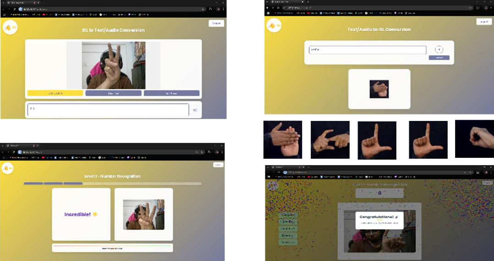

Indian Sign Language Recognition
Real‑time recognition of ISL alphabets and words using a compact computer‑vision pipeline paired with a lightweight CNN. The goal is reliability on consumer webcams, so the model favors stable confidence over flashy FPS. Preprocessing handles hand region isolation and noise suppression, while the UI highlights predictions and confidence in an accessible layout. The system is packaged for quick demos and classroom use, with an emphasis on setup simplicity. Future iterations explore transfer learning to support more signs without ballooning size.